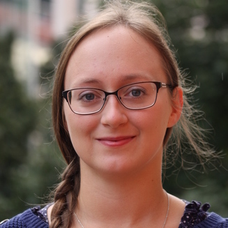
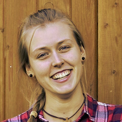
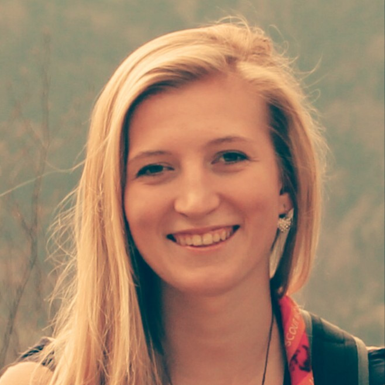

Infomace o CEJ 2018
Středoevropské jamboree je zahraniční akce pořádaná jednou za dva roky, na kterou se sjíždí skauti z celé střední Evropy. V organizování této akce se vždy střídají země Visegrádské čtyřky, tedy Česká republika, Polsko, Maďarsko a Slovensko.
Další Středoevropské jamboree se bude konat právě v Maďarsku u velkého jezera Balaton, a to v termínu:
28.7. – 4.8. 2018
Na tuto velkou akci přijíždí skautky a skauti v patrolách, které se skládají z jednoho dospělého vedoucího a devíti účastníků ve věku 14-17 let.
Pokud však nechceš jet jako vedoucí patroly a je ti více jak 18, můžeš se přihlásit do International Service Team (IST) a pomáhat samotným organizátorům Jamboree vytvořit ten nejlepší zážitek pro účastníky!
Program
Letošní programové motto je:
Scouting on new waves!
Můžeš se těšit na ceremoniály, které se konají vždy na začátku a na konci akce a jejichž cílem je všechny přivítat a zahájit akci, či se rozloučit a společně akci ukončit. Na international day, kde každá země, která se Jamboree účastní, má za úkol představit svou kulturu jiným zemím a na mnoho dalších skvělých aktivit, které si pro tebe organizátoři připraví!
Patrola
Jeď jako účastník!
Je ti 14 až 17 let? Tak přímo pro tebe je Středoevropské jamboree přímo určené a můžeme ti zaručit, že si ho naplno užiješ! Vezmi dalších osm kamarádů a jednoho vedoucího nad osmnáct let, ať je vás v patrole přesně deset, a zaregistrujte se.
Jeď jako Patrol leader!
Je ti víc jak osmnáct, ale i přes to bys chtěl zažít všechen program stejně jako účastníci? Žádný problém. Sežeň k sobě devět dětí ve věku 14 až 17 let, slož patrolu a zaregistrujte se! Pokud však víš, že bys všech devět dětí nesehnal, přečti si informace níže v kolonce Registrace.
Jeď jako IST!
Členové International Service Teamu (IST) si jedou Jamboree užít trochu z jiného úhlu pohledu – z toho organizátorského. Pokud je ti více jak osmnáct let a nebojíš se práce s přibližně šestihodinovou denní pracovní dobou, tak se k nám rozhodně přidej!
FAQ
Má patrola nějaké speciální místo na ubytování?
Ano, má. Těmto místům se říká „subcampy“ a v jednom bydlí přibližně 10 patrol.
Kde se odehrává program?
Program má na Jamboree svoje samostatné území, které je pro to speciálně vybaveno. Některé programy však probíhají i mimo tábořiště.
Jak je to na Jamboree s jídlem?
Stravu zajišťují samotní organizátoři, takže si sami vařit nemusíte. Jídlo dostanete 3x denně a můžete si vybrat, zda dáte přednost general stravě, vegetariánské, či veganské, nebo úplně nějaké jiné. Pozor se dává i na alergie a diety.
Je nutné, aby byla patrola plně obsazena?
Ano, je. Pokud vám nějací členové chybí do plného počtu, napište nám na náš mail cej2018@skaut.cz a my vám zkusíme nějaké členy bez patroly přidělit.
Co když nemám patrolu, ale moc ráda bych jel/a?
Zkus nám napsat na mail a zkusíme ti nějakou patrolu najít. ;)
Co když mám v oddíle skautku/skauta, kterému je 13 let?
Pokud si myslíš, že zvládne komunikovat v angličtině a je dostatečně dospělý na to, aby si to užil, tak nám napiš a domluvíme se individuálně. ;)
Registrace
Patrolu registruje patrol leader. Pokud má nekompletní patrolu, tedy nemá zaregistrováno devět dětí pod 18 let, zaregistruje alespoň ty, které má a vedení kontingentu se s ním posléze zkontaktuje na uvedený mail v registračním systému a společně se domluví na možnostech doplnění patroly.
Pokud jsi účastník ve věku 14–17 let a nemáš svého patrol leadera ani patrolu, zaregistruj se a my ti zkusíme nějakou patrolu najít. Čím dříve se zaregistruješ, tím bude větší šance, že pojedeš a že ti někoho najdeme.
IST se registruje samostatně.
Registrace proběhne někdy okolo prosince a ledna.Kontakty
V případě jakýkoliv dotazů se obrať na email
cej2018@skaut.cz
Už jsi nám dal like na Facebooku? Na naší facebookové stránce
facebook.com/CEJ2018czse dozvíš všechno, co se aktuálně u nás v kontingentu děje a vše, co potřebuješ vědět.
Nezapomeň nás také sledovat na Instagramu, kde sdílíme fotky z akce a třeba budeme sdílet i ty tvoje! 😊 Náš vlastní hashtag Českého kontingentu je
#cej2018cz
Tým
Vendy
šéfka
Sunny
finance
Ája
program
Flo
Twiggi
propagace
Biff
logistika
Profesor
grafika
Lung
registrace
Piškot
komunikace
Co ty?
International Day

Anebo ty?
fotograf